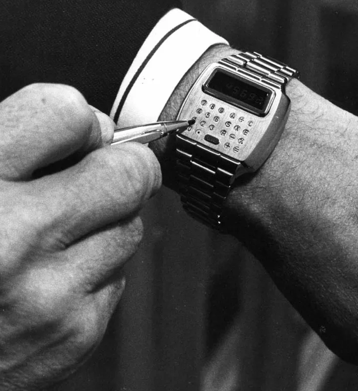
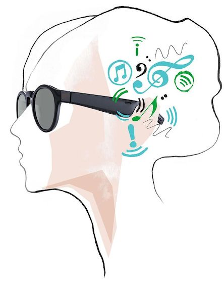

Wearables have sensors that help us to detect something. They are getting smarter, they help us with our health and enables us to become healthier. The first wearable invented is the 1975 Calculator Watch. The Calculator Watch has evolved into smartwatch and Nike has invented the self lacing shoes.
Calculator WatchNike: Self lacing shoe
My idea
Wouldn’t it be great if everyone had a tattoo who showed if someone is hungry or not? Maybe you’ve heard about the term “hangry”. This means a person is angry because he/she is hungry. I am angry when I am starving. Hermans et al. have revealed that the sudden drop in glucose may impact our mood.
How it works
That’s how I’ve come up with the idea of having a smart tattoo with a sensor that wirelessly tracks the level of glucose you have in your blood. The tattoo will turn red if you have a low level of glucose, so you need to eat something to not get hangry. A green colour is perfect, now you can talk with me without getting bitten.
More features
This idea is not only a social warning for socializers, it also functions as a warning system for people who suffer from certain illnesses. The amount of glucose in the blood may have effect on the mood of a person but it does way more. It may help people with diabetus.
Because my brother is a diabetic type one, I know that when the glucose level in the blood is too high, the body isn’t properly using or doesn’t make the hormone insulin and this may result in injuries. For these people it’s smart to add an extra colour, say purple to indicate a rise of the glucose levels. This way diabetic people can anticipate on this problem.
Appearance
The tattoo is shown on someone’s lips. That’s where the food comes in and the angry words are coming out. The only disadvantage is that I can’t wear lipstick. Another feature this idea has, is that the liptattoo lights up when you are in the dark.
Hermans, N., Scheff, C., Kulzer, B., Weyers, P., Pauli, R., Kubiak, T., & Haak, T. (2006, 19 november). Association of glucose levels and glucose variability with mood in type 1 diabetic patients. Geraadpleegd op 28 april 2019, van https://link.springer.com/content/pdf/10.1007%2Fs00125-007-0643-y.pdf
My idea: A liptattoo
Research
The Bose Frames are a pair of sunglasses with built-in speakers to give you the benefit of headphones without having anything in your ears. The idea behind the Bose Frames is to offer wireless audio without completely obscuring your ears while providing your eyes some sun protection.
You can use it for two hours with the battery, then you have to charge it again. They aren’t waterproof, so you can’t swim with them. You can connect you phone with the sunglasses via Bluetooth and use the app to change the settings, for example change the volume of the sound. You can choose the music via your phone.

Reflection
I think wearables are a great addition to the society in the sector healthcare. They help us with our health and the doctors to get access to data of the health of a patient. The doctor is able to compare and analyze data to make sharper decicions to enhance the patient’s quality of life. Also fun things like self lacing shoes are actually great for parkinson patients.
Prediction future
The society can’t live without the wearables anymore. People will live longer because they can see precisely the quality of their health, and the doctor know exactly what’s going on with a patient. I think in the future it will save major healthcare costs, because the patient knows when he needs to go to the doctor or not and the doctor knows precisely which medicines the patient needs. For example smart pills, smart bandages and smartwatches will be common applications in the future healthcare industry.
Did the subject meet my expectations?
Yes it did. I think it is amazing how far we are already with the technologies of wearables when I look at the examples given in the colleges.